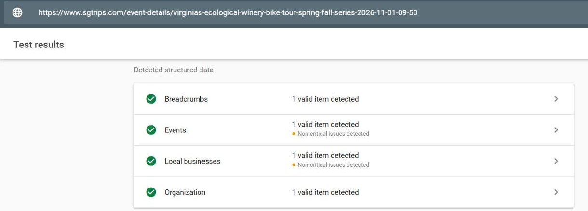

Shifting Gears — Progress
SEO & technical improvements for sgtrips.com. Updated 2026-10-30 16:37 UTC.
5 of 7 tasks done (71%)
Priority: red critical · orange high · yellow medium · gray your action · blue not in this contract (gray and blue aren’t counted in the progress above) | ✅ done · 🔄 in progress · ⬜ to do · ⏸️ to discuss
1. Kickoff & access
| Pri | Task | Status | Notes |
|---|---|---|---|
| Wix site access (collaborator) | ✅ | ||
| Google Analytics (GA4) access | ✅ |
2. Website & technical SEO (Jamshid)
| Pri | Task | Status | Notes |
|---|---|---|---|
| Install GA4 + conversion tracking | ✅ | ||
| Add Organization / LocalBusiness schema | ✅ | Checked with Google’s Rich Results Test on a live tour page — valid, no errors.  | |
| Add BreadcrumbList schema | ✅ | Checked with Google’s Rich Results Test on a live tour page — valid, no errors. | |
| Complete social share previews (Open Graph / Twitter) | ⬜ | ||
| Accessibility & technical hygiene pass | ⬜ |
3. Your pieces (Jeff)
| Pri | Task | Status | Notes |
|---|---|---|---|
| Speed up homepage (compress/replace hotlinked Instagram photos) | 🔄 | ||
| Rewrite duplicate/truncated tour page titles | 🔄 | The duplicate titles were on old tour pages. Those are now out of Google (see the last row). | |
| Fix missing/placeholder meta descriptions | 🔄 | Most of the missing descriptions were on old tour pages, which are now out of Google. Still to check: the “Private Tours” page, which had no description on 2026-10-18. | |
| Remove expired tour pages from search | ✅ | Checked 2026-10-30: 128 of 140 tour pages are now set to “noindex” (Kyle did these), and none of the upcoming tours was touched. The sitemap now lists only the 12 live pages. Two tours that just ended (10/26 and 10/29) still need the switch, and so will today’s (10/30) once it is over. It can take Google a few weeks to drop the old pages. |
4. Not in this first contract
Work we’ve scoped out but that isn’t covered by the first contract, so it isn’t counted in the progress above. Each needs a decision and a separate quote before anything is built.
| Pri | Task | Status | Notes |
|---|---|---|---|
| Homepage redesign — build Kyle’s new copy in Wix | ⏸️ | Copy approved by Jeff. Out of this contract scope. | |
| Rebuild internal linking | ⏸️ | Moved here from the list above. The new homepage copy already sets out the links, so building them with the new page avoids doing the work twice. | |
Wine tours landing page /wine-tours/ | ⏸️ | Suggested inside Kyle’s copy. | |
Farm tours landing page /farm-tours/ | ⏸️ | Also suggested in Kyle’s copy. | |
| Blog section + post template, and publishing the first post | ⏸️ | Kyle’s first post is written and ready, but the site has no blog, no post template and no blog link in the menu. Set up once, then Kyle can publish on his own. |